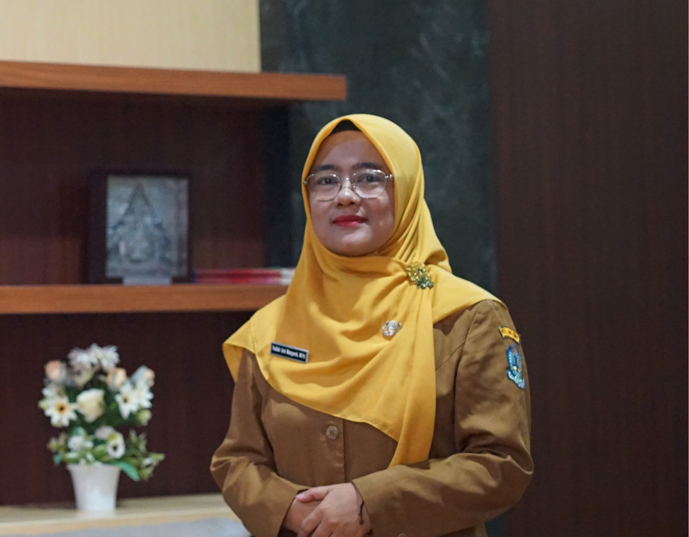

Sambutan Kepala Sekolah

Assalamu’alaikum Warahmatullahi Wabarakatuh, Salam Sejahtera untuk kita semua.
Selamat datang di website resmi SMA Negeri 1 Kepanjen. Puji dan syukur senantiasa kita panjatkan ke hadirat Tuhan Yang Maha Esa atas karunia dan limpahan rahmat-Nya sehingga media informasi ini dapat hadir sebagai jembatan komunikasi bagi seluruh sivitas akademika, orang tua siswa, alumni, dan masyarakat luas.
SMAN 1 Kepanjen berkomitmen menghadirkan ekosistem pembelajaran yang bermutu, inklusif, dan berorientasi masa depan dengan berlandaskan nilai integritas moral, penguasaan teknologi informasi, serta aksi nyata peduli pelestarian lingkungan hidup.
Semoga website ini dapat memberikan gambaran utuh mengenai program kerja, kegiatan kesiswaan, prestasi, serta layanan akademik yang diselenggarakan di sekolah kami.
Visi & Misi Sekolah
Visi Sekolah
Misi Sekolah
- Menumbuhkembangkan penghayatan dan pengamalan nilai-nilai keagamaan guna membentuk generasi yang bertakwa dan berakhlak mulia.
- Menyelenggarakan proses pembelajaran yang inovatif, bermutu, dan berpusat pada pengembangan potensi peserta didik.
- Mendorong dan memfasilitasi pencapaian prestasi akademik maupun non-akademik di tingkat regional, nasional, dan internasional.
- Menumbuhkan budaya disiplin, kejujuran, semangat gotong royong, toleransi, serta cinta tanah air pada seluruh warga sekolah.
- Menciptakan lingkungan sekolah yang asri, bersih, sehat, dan ramah lingkungan sebagai sarana pembentukan karakter peduli alam.
Keunggulan SMAN 1 Kepanjen
Sebagai salah satu sekolah rujukan di Kabupaten Malang, SMAN 1 Kepanjen menerapkan standar pendidikan komprehensif:
Kurikulum Merdeka
Pembelajaran berbasis riset, penguatan penalaran kritis, dan Projek Penguatan Profil Pelajar Pancasila (P5).
Sekolah Adiwiyata
Kampus hijau berkelanjutan dengan program pelestarian alam, pemilahan sampah, dan kebun botani.
Laboratorium Modern
Fasilitas lab komputer, bahasa, dan sains terpadu yang memadai untuk praktik dan uji kompetensi.
Sarana & Fasilitas Pembelajaran
SMAN 1 Kepanjen menyediakan sarana pendukung kegiatan belajar mengajar yang representatif:
| Fasilitas | Deskripsi & Pemanfaatan |
|---|---|
| Lab Komputer | 4 ruang laboratorium dengan 160 unit PC untuk CBT, Asesmen Nasional, dan pembelajaran TIK. |
| Lab Sains Terpadu | Laboratorium Fisika, Kimia, dan Biologi lengkap dengan peralatan mikroskop dan instrumen eksperimen. |
| Perpustakaan | Perpustakaan "Cakrawala" dengan ribuan judul buku pelajaran, literatur referensi, dan pojok baca digital. |
| Sarana Olahraga | Lapangan basket, lapangan voli, futsal, dan lintasan atletik untuk pembinaan kebugaran jasmani. |
| Masjid Al-Hikmah | Pusat ibadah warga sekolah, kegiatan sholat berjamaah, dan pembinaan keagamaan siswa. |
| Green House | Kebun konservasi tanaman, pembibitan hidroponik, dan area praktik pendidikan lingkungan hidup. |
Berita & Informasi Terbaru
Inovasi robot pemilah sampah otomatis berbasis IoT karya siswa peminatan IPA-Teknik berhasil meraih predikat Juara 1 pada ajang kompetisi sains nasional di Jakarta...
Ratusan siswa kelas XII antusias mengikuti bimbingan strategi pemilihan program studi di perguruan tinggi negeri terkemuka bersama narasumber ikatan alumni...
Video Profil Sekolah
Mengenal lebih dekat lingkungan belajar, suasana kelas, dan aktivitas ekstrakurikuler di SMAN 1 Kepanjen: